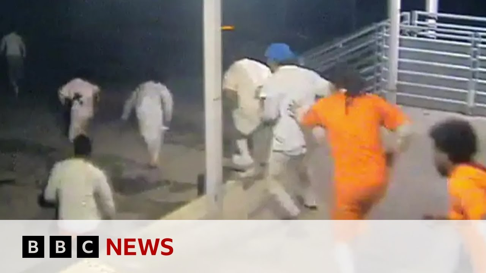

【新奥尔良越狱事件后展开追捕行动 | BBC新闻】
Summary: A manhunt is ongoing in New Orleans after 10 armed and dangerous inmates escaped from prison on Friday morning, with three already apprehended. Authorities believe they broke through a cell wall and fled across a highway, leaving taunting graffiti. Officials urge public vigilance but advise against panic, as the fugitives face violent charges.
摘要： 新奥尔良发生越狱事件，10名武装且危险的囚犯周五早晨逃脱，其中3人已被抓获。当局认为他们破坏牢房墙壁后穿越高速公路逃离，并留下挑衅涂鸦。官员呼吁公众保持警惕但不必恐慌，这些逃犯均面临暴力犯罪指控。

⏱️ Estimated Reading Time: 12 min
Well, manhunt is continuing in the US city of New Orleans after 10 inmates considered armed and dangerous escaped from a prison there on Friday morning.
美国新奥尔良市持续展开搜捕行动，10名被认为携带武器且危险的囚犯于周五早晨从当地监狱逃脱。
Three of the prisoners now have been apprehended.
其中3名囚犯现已被抓获。
The sheriff's office said the inmates were discovered missing during a routine headcount.
警长办公室称，囚犯是在例行点名时被发现失踪的。
They're believed to have escaped sometime just after midnight.
据信他们在午夜刚过时逃脱。
This is the remarkable footage showing the moment the jailbreak took place after yanking a cell door off its tracks.
这是记录越狱瞬间的惊人画面——囚犯将牢房门拽离轨道后逃脱。
The inmates then fled across the interstate highway.
囚犯随后穿越州际高速公路逃离。
This is CCTV from inside the prison.
这是监狱内部的监控画面。
Now, the sheriff's office has also released these images showing that the inmates broke through a wall behind a toilet.
警长办公室还公布了这些图像，显示囚犯破坏了马桶后方的墙壁。
Scrolled on the wall are the words, "Too easy, lol."
墙上涂写着"太简单了，哈哈"的字样。
Some of the escapees are facing murder charges or other violent charges.
部分逃犯面临谋杀或其他暴力犯罪指控。
The sheriff's office says it's informed some of the alleged victims that the men are on the loose.
警长办公室表示已通知部分案件受害者这些逃犯在逃的消息。
There is a press conference taking place right now in the city of New Orleans.
新奥尔良市正在举行新闻发布会。
Officials there briefing the press.
官员正在向媒体通报情况。
Let's take a listen group to ensure the safety of the public who's there in that area as well as those who are working the investigation and the safe and secure apprehension of those who who are fugitives.
请听我们如何确保该地区公众安全，同时保障调查人员安全并稳妥缉拿逃犯。
Each second does count.
每分每秒都至关重要。
Certainly, the sooner we can apprehend them, the sooner everyone can be rest assured that they are no longer a threat to the public.
显然，越早抓获他们，公众就能越早安心。
These are violent offenders who escaped and we have to bring them back and they will go to a state prison.
这些逃脱的暴力罪犯必须被缉拿归案，他们将送往州立监狱。
So there was a shooting in New Orleans East recently.
最近新奥尔良东部发生了枪击事件。
Um believe it might have been an officer incident.
嗯认为可能是警官相关事件。
Right.
对。
So, it was an event in which uh there were law enforcement, federal partners who were out there actually on uh surveillance of a target uh home and completely independent they heard uh gunfire erupt.
当时有执法部门和联邦探员正在监视目标住宅，他们完全独立地听到了枪声爆发。
And when they went to that particular scene, which had nothing to do with this particular investigation, uh that matter uh has been dealt with.
当他们前往该现场时（与此案无关），事件已得到处理。
No one has been injured.
无人受伤。
No law enforcement was involved in the exchange of gunfire and it is not connected.
没有执法人员参与交火，此事也无关联。
Last question.
最后一个问题。
What you guys have to say to the public?
你们想对公众说些什么？
You know, there's still seven people on the run here.
目前仍有七人在逃。
They're scared to walk outside.
人们害怕外出。
Um, you know, kind of, you know, are they in any danger?
呃，他们是否面临危险？
What we can say is that we'll speak to the fact that the people who are fugitives right now are dangerous people.
我们必须说明这些逃犯确实危险。
Is the general public right now um should they panic?
公众现在应该恐慌吗？
And the answer is no.
答案是否定的。
Now our number one mission despite anything else right now is to get these people in custody.
当前首要任务是将这些人缉拿归案。
So, I think you can still uh you know fully enjoy graduation ceremonies tomorrow, having dinner out, the things that you would normally do.
大家仍可正常参加毕业典礼、外出用餐等日常活动。
However, we just ask that you are mindful and you're attentive.
但请保持警惕和注意。
You call us.
请联系我们。
If you think that something is out of order, you call us.
发现异常请立即报警。
Sometimes people think, well, I don't want to call 911.
有时人们不愿拨打911。
What if I am wrong?
万一我搞错了呢？
But what if you're right?
但如果你是对的呢？
And so, call us.
所以请报警。
But don't don't panic.
但不必恐慌。
Just simply continue living and enjoying life, but just be cautious.
保持正常生活只需多加谨慎。
That's what we have.
这就是我们要说的。
And we're going to keep you updated until every single one of them are accounted for and back in custody.
我们将持续通报直至所有逃犯归案。
So, we think that based on the leads we've been getting, these are active and real leads.
根据现有线索，这些都是有效线索。
So, keep talking to us.
请继续提供信息。
We need you.
我们需要大家。
All right.
好的。
Thank you all for coming out.
感谢各位到场。
We appreciate it.
我们深表感谢。
We have any further information, we will send that in the question.
有新消息会通过提问环节传达。
Yeah, there you go.
好的就这样。
That press conference there in New Orleans and Kirk Patrick, the New Orleans chief of police briefing media there describing the seven people who have uh still who are still on the loose after that breakout of that jail as uh dangerous fugitives, but still telling the public it's not time to panic.
新奥尔良警方局长柯克·帕特里克在发布会上称七名越狱逃犯仍危险在逃，但告知公众无需恐慌。
We do have Anna Adams in New Orleans for us.
我们联系到在新奥尔良的安娜·亚当斯。
She's been following this story.
她持续跟踪此事。
Anna, of course, we just heard a bit of that press conference there from the New Orleans chief of police police, but just bring us up to date with the latest.
安娜，我们刚听完警方发布会，请提供最新进展。
Well, as we heard, a third fugitive has now been found in the east of the city.
第三名逃犯已在城市东部被捕。
Earlier today, uh, another one was found in a very central neighborhood here, and another one was found in the French Quarter this morning, which is anyone who's been here will know that is the center of town.
今天早些时候，另一人在市中心社区落网，今晨法国区也抓获一人——众所周知那里是城市核心区。
It is where all of the tourists were and he was apprehended outside of one of the city's most famous hotels at lunchtime.
该逃犯午间在这座城市最著名酒店外被抓获，那里游客密集。
So really it's quite incredible scenes here and the city has been on alert all day.
场面确实令人难以置信，全市全天保持警戒。
There have been helicopters, there have been drones out in the neighborhoods where the fugitives have uh were previously living and so there is a sense because this is a small city and the prison is only a short drive outside of the city center.
直升机无人机在逃犯曾居住社区巡查，由于这是小城市且监狱距市中心仅短程车程，紧张感弥漫。
There is a sense here that people are on on high alert.
民众高度警惕。
Yeah, really incredible scenes.
确实难以置信的场景。
And I think you know what's on a lot of people's minds, not only there in New Orleans, but anybody that's been following this story is, you know, how could something like this happen?
不仅是新奥尔良，所有关注此事的人都在想：这怎么可能发生？
Have we heard anything more from the authorities about how this jailbreak actually took place?
当局是否说明越狱具体过程？
Well, what we've heard is actually incredible and it brings to mind a film really.
听到的情况确实匪夷所思，堪比电影情节。
We've seen uh I don't know if our viewers have seen the pictures of inside the cell which shows how the prisoners were able to remove a toilet and hack into the wall and all 10 of them get out down the side of the wall that way.
监控显示囚犯拆下马桶凿穿墙壁，十人全部由此逃脱。
They then went to um the loading bays that are used by uh delivery men, delivery people.
随后他们前往装卸区。
They then, and this is all on film, crossed the very busy interstate and you can see them in their um prison uniforms running out of the jail almost on mass.
画面记录他们穿着囚服集体穿越繁忙州际公路。
And what is also remarkable is that that video was taken by the prisons cameras, their own cameras at around 1:00 this morning.
值得注意的是监狱摄像头在凌晨1点就拍下这些画面。
But the prisoners didn't realize, the prison wardens didn't realize that anyone was missing till a routine headcount at 8:30 this morning.
但狱警直到今早8:30例行点名才发现有人失踪。
And that's when um they realized that not only 10 people, they thought it was 11 and then they then found one of the people inside of the jail.
当时他们以为是11人失踪，后来发现其中一人仍在狱中。
So it's a series of really really perplexing issues that you could do think how has this been able to happen?
这一连串问题令人费解：这怎么可能发生？
Not only that, when they found out at 8:30 this morning, it then took till lunchtime to let the public know and the media know by which time these fugitives have been at large for 11 hours.
更甚者，早上8:30发现后，直到午间才通知公众和媒体——此时逃犯已逍遥法外11小时。
So, it really is there is begging some serious serious questions for the sheriff's office.
这引发对警长办公室的严重质疑。
Yeah, and we've been watching some of that surveillance video there showing those inmates, you know, wrenching a door open, running out of the jail, and we saw, of course, that picture almost taunting the authorities where they wrote too easy lol over a hole in in one of the cells in that in that jail.
监控显示囚犯撬开门冲出监狱，他们在牢房破洞处留下"太简单了哈哈"的挑衅文字。
Uh, you mentioned there, seven of them still at large, three inmates are now in custody.
你提到七人仍在逃，三人已归案。
We heard a bit there from the chief of police and Kirkpatrick kind of calming down the public saying, you know, they're they're they're not in danger and yet people should still be mindful.
警方局长试图安抚公众称没有危险，但仍需保持警惕。
Do do we have a sense of you mentioned it's a small town, you know, the risk to the public as these people are still loose?
这是小城市，这些逃犯仍在逃，公众风险如何？
People are definitely definitely nervous and some members of um the community are definitely scared.
民众非常紧张，部分社区成员确实害怕。
These are all of these men have been accused of violent crimes.
这些人都被指控暴力犯罪。
Several of them have been accused of murder.
其中多人涉谋杀指控。
So this is not something to be taken lightly.
绝非小事。
And there was an incredible press uh conference this afternoon with the sheriff's office.
警长办公室下午举行了引人关注的发布会。
The sheriff are in charge of policing and um watching the jails.
警长负责警务和监狱监管。
Now the sheriff here um Susan Houston has um hinted that this was a politically motivated escape.
苏珊·休斯顿警长暗示此次越狱有政治动机。
She said um there were serious questions about why did it happen so close to the time when a new sheriff will be elected.
她质疑此事为何在新警长选举前夕发生。
She said that they'd had help.
她称囚犯获得外部协助。
and three um of the wardens have since been suspended.
三名狱警已被停职。
So really quite remarkable comments coming from the sheriff uh this afternoon.
警长下午的发言相当惊人。
Um what she hasn't said and which people were asking her repeatedly to do was if she was going to apologize for this happening on her watch.
民众反复要求她为任内发生此事道歉，但她未回应。
Now, that's something that she hasn't done.
她尚未道歉。
And um that is what people really want to hear tonight when they're going to bed knowing that seven armed and dangerous fugitives are on the loose in New Orleans.
今晚民众入睡前最想听到道歉——毕竟七名武装危险逃犯仍在新奥尔良流窜。